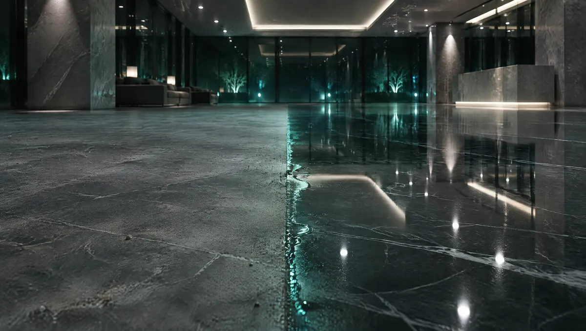
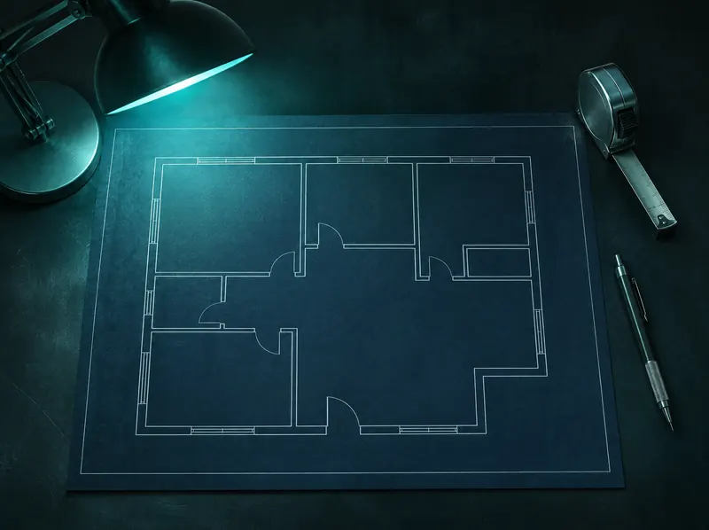
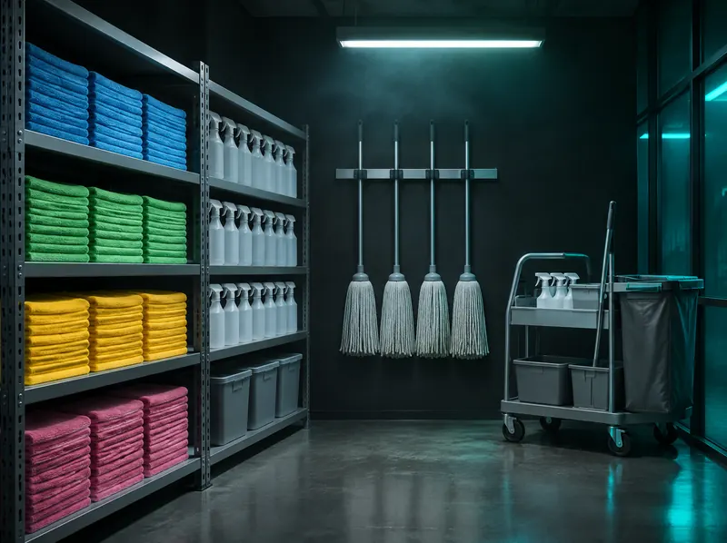
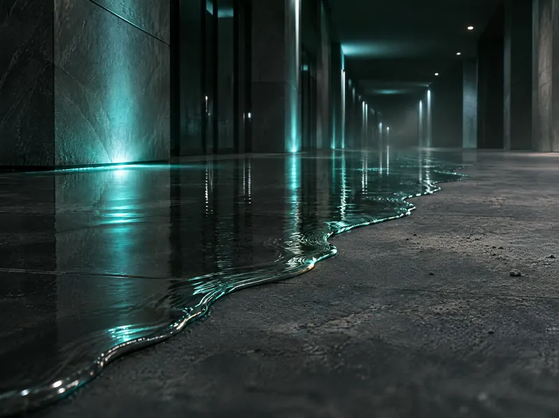
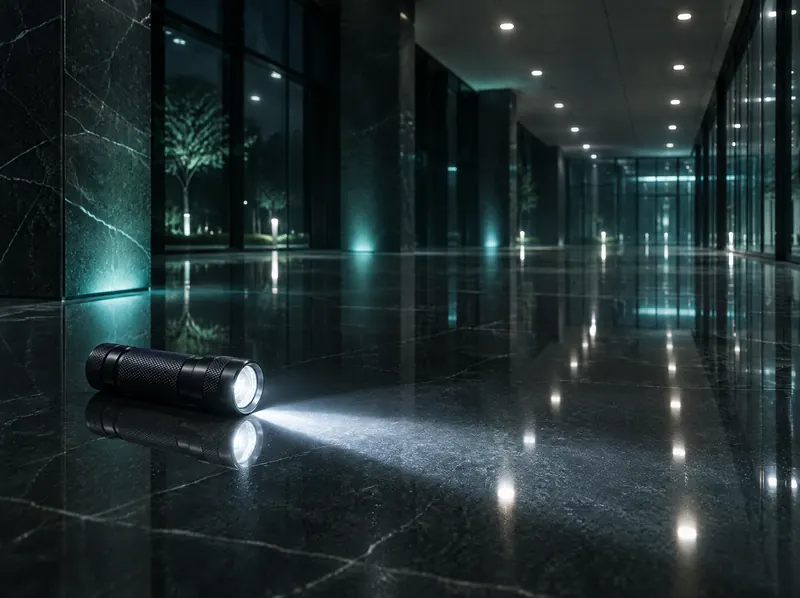

La méthode
Crescend’eau.
Quatre étapes, les mêmes sur chaque site. C’est ce qui rend notre résultat constant, mesurable et vérifiable.
De la visite au contrôle.
-

Audit du site
Un chargé d’affaires visite vos locaux, gratuitement. Il relève les surfaces, les revêtements, les usages et vos contraintes : horaires, accès, sécurité, image.
- Relevé des surfaces et des revêtements
- Repérage des zones sensibles
-

Plan d’intervention
L’audit devient un cahier des charges : tâches, fréquences, horaires, équipe et produits. Vous le validez avant le premier passage.
- Fiches de poste par zone
- Planning des passages
- Choix des produits adaptés à vos surfaces
-

Exécution technique
Une équipe titulaire, formée à votre site, intervient avec un matériel professionnel entretenu : autolaveuses, balayeuses, haute pression, eau pure.
- Équipe dédiée, remplacée le jour même
- Matériel siglé et entretenu
- Protocoles d’hygiène et de sécurité
-

Contrôle qualité
Votre responsable de site contrôle le travail selon une grille notée, partagée avec vous. Tout écart déclenche une action corrective suivie jusqu’à sa clôture.
Parlons de votre site.
Un compte rendu écrit et un devis. Sans engagement.